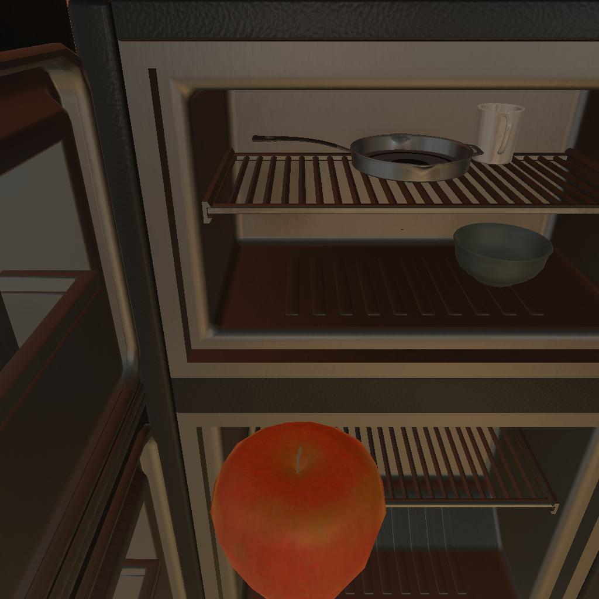
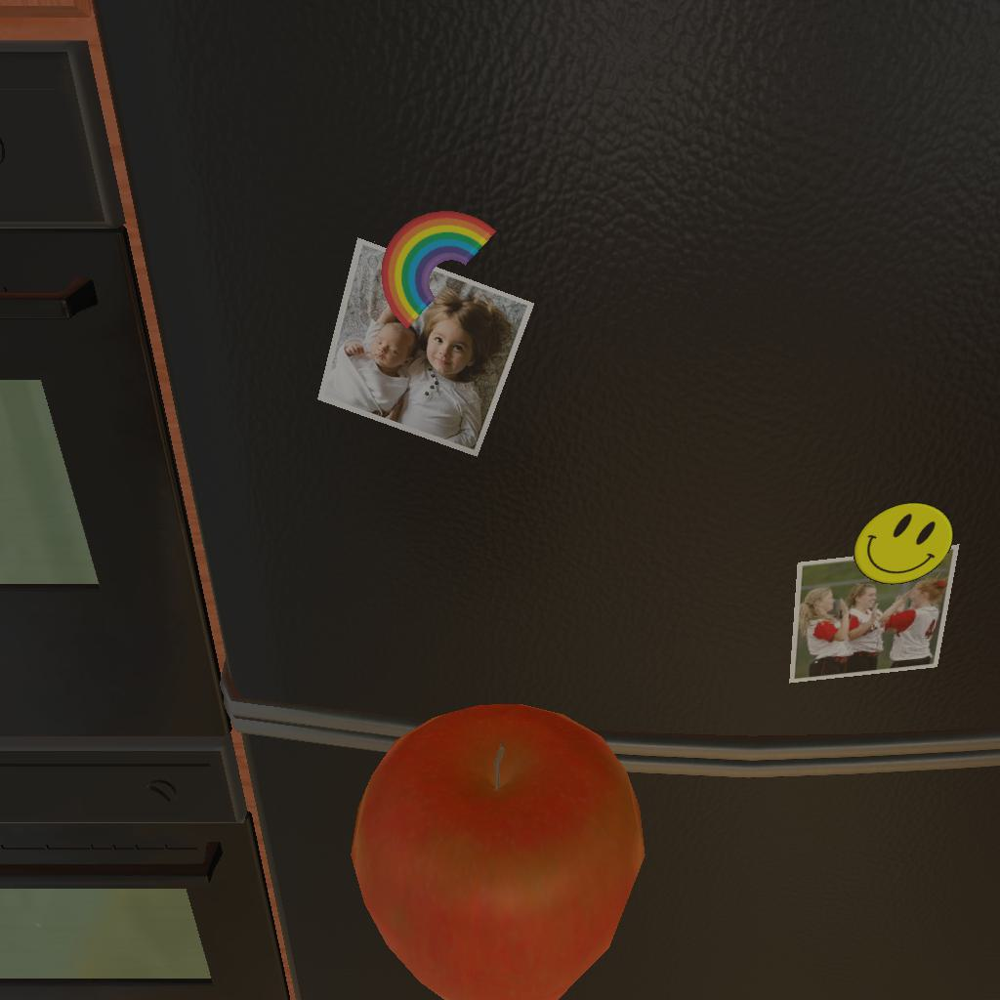
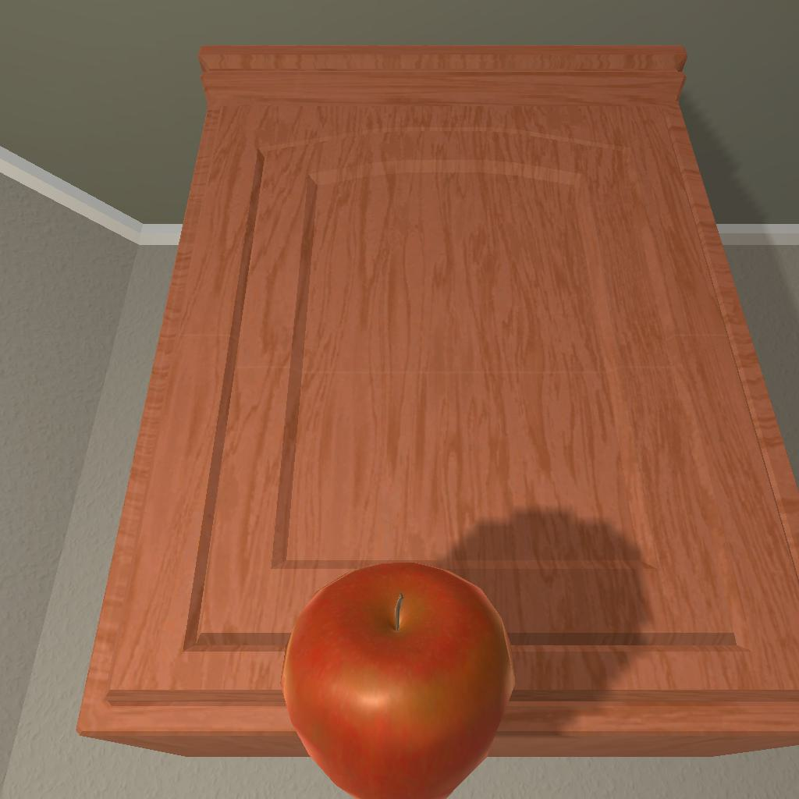

---------------------------------------------------------task: 19---------------------------------------------------------
--------------------------------------------------------------------------------------------------------------------------------------------------------------------
--------------------------------------------------------------------------------------------------------------------------------------------------------------------
Step:--------------------------------------------------------------------------18-------------------------------------------------------------------------------
----------------------------------------
VLM Prompt:
Image1:
Image2:
Image3:
**Instruction**
1. Analyze the provided images to identify all visible household objects and compare the difference between images (e.h. whether the object is opened or not and taken on hand or not), focusing on those relevant to the task description "put a cool tomato in microwave."
2. Use the analysis of images and the task hint "The agent must find an object of the desired type, pick it up, go to a fridge, cool the object with the fridge, then find the correct location to place it, and put it down there. The agent does not need to use the fridge button or open the fridge to cool the object, and the agent just needs to do action that is "cool the object with the fridge"." to answer the question: what is the most reasonable action in the choices for the task description "put a cool tomato in microwave"?
3. Decide and write the answer using the template: The answer is: (i): , where i is the real number. If there is no desired object in images, search every place based on **Initial Observation** to find the object. And if no one is exactly correct, choose a similar answer.
**Initial Observation**
You are in the middle of a room. Looking quickly around you, you can see cabinet (1-15), fridge (1), countertop (1-4), drawer (1-4), microwave (1), toaster (1), coffeemachine (1), garbagecan (1), sink (1), stoveburner (1-3), sinkbasin (1)
**Answer Choices**
(1): go to cabinet 2
(2): go to cabinet 3
(3): go to fridge 1
(4): go to countertop 1
(5): go to cabinet 4
(6): go to cabinet 5
(7): go to cabinet 6
(8): go to cabinet 7
(9): go to drawer 1
(10): go to drawer 2
(11): go to cabinet 8
(12): go to drawer 3
(13): go to cabinet 9
(14): go to cabinet 10
(15): go to drawer 4
(16): go to microwave 1
(17): go to cabinet 11
(18): go to toaster 1
(19): go to cabinet 12
(20): go to cabinet 13
(21): go to cabinet 14
(22): go to cabinet 15
(23): go to countertop 2
(24): go to coffeemachine 1
(25): go to garbagecan 1
(26): go to countertop 3
(27): go to countertop 4
(28): go to sink 1
(29): go to stoveburner 1
(30): go to stoveburner 2
(31): go to stoveburner 3
(32): go to sinkbasin 1
(33): open cabinet 1
(34): close cabinet 1
(35): put apple 1 in/on cabinet 1
(36): examine apple 1
(37): examine cabinet 1
**Answer**
Let's think step by step by following the instructions.
----------------------------------------
----------------------------------------
Original Response:
Based on the task description "put a cool tomato in microwave," we need to identify a tomato and a microwave in the provided images.
Analyzing Image1, we can see a fridge with its door open. We do not see any tomatoes inside the fridge, but we do see the interior of the fridge with shelves that possibly contain items not visible in the image due to the angle. There is no action to be taken here since we do not see the tomato.
In Image2, we see what appears to be the outside of the fridge with photos and magnets. However, there is no tomato to be seen here, so we cannot take any action related to our task from this image.
Image3 shows us a clear view of a tomato, but it is not inside a fridge or a microwave. This tells us that we have found the object we need to cool and subsequently place in the microwave.
Considering the Initial Observation, which gives us a layout of the room, and the provided task hint that states the agent does not need to use the fridge button or open the fridge to cool the object, we can infer that the agent simply needs to be near the fridge to "cool the object with the fridge."
Since we have found the tomato in Image3 and we know the location of the fridge from Image1, the most reasonable next action would be to take the tomato to the fridge to cool it. However, since the instructions state that the agent just needs to do the action that is "cool the object with the fridge" without using the fridge button or opening it, and since there is no explicit action listed to cool the object with the fridge, the next best action related to our task would be to go to the microwave to complete the final step of the task, which is to put the cooled tomato in the microwave.
Therefore, the answer is: (16): go to microwave 1.
----------------------------------------
----------------------------------------
>>> Refine Original VLM Response and Get Pure Action: No action
----------------------------------------
-----------------------------------------------------------------
Running time: 66.31284594535828 seconds
Total Money: 11.98781
-----------------------------------------------------------------
-----------------------------------------------------------------
Text Observation:Nothing happens.
-----------------------------------------------------------------
UNSUCCEED